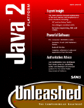

|  | Java 2 Platform Unleashedby Jamie Jaworski |
I've always been a big fan of the Java Unleashed series of books, not only for their ability to teach the Java programming language, but also for their comprehensive coverage of the Java language, its API, and advanced topics like multi-threading, networking, and Java extensions. This type of coverage means that they can be used afterwards as a programming reference. With the release of the Java 2 platform, however, there have been many changes including Swing, servlets, CORBA, and increased multimedia support (Java Media Framework, Java 2D, Java 3D). Some books might have adopted a superficial approach, covering only the most obvious of changes, and leaving out the new Java extensions. So it's with great surprise, and a little relief, that "Java 2 Unleashed" continues the fine tradition of its predecessors, by providing comprehensive coverage of all the new changes and features of Java 2.
While many references give only superficial coverage of topics, "Java 2 Unleashed" takes a detailed look at the Java 2 Platform. Whether you're interested in upgrading your applications to use the rich range of new Swing components, want to create interactive applets to spice up a website, or even write client/server networking applications, this book covers it! But it goes further still. There are chapters on using the system clipboard, implementing drag and drop support, printing, and internationalization. Its coverage on networking and distributed systems covers remote method invocation (RMI), content handlers, JavaMail, CORBA and network programming (total of seven networking chapters). For those interested in Java's multimedia support, there are chapters covering the new Java 2D & Java 3D APIs, implementing animation in applets, and the new Java Media Framework (JMF). Even more impressive is the comprehensive look at developing and using JavaBeans (six chapters in total). This is the ultimate reference, and makes it easy to get a handle on the new changes in the Java 2 Platform.
Nor is this title limited only to the new innovations which would interest existing Java developers. This book takes on the awesome challenge of introducing someone new to Java to the Java 2 platform, taking it slowly from applets to applications, through AWT & Swing, as well as the core Java packages (java.lang, java.util, java.net), database programming with JDBC, development tools, and all the practical information gathered from the author's experience. "Java 2 Platform Unleashed" is a fine addition to the library of any programmer, be they experienced in Java or still learning it
Nor is this title limited only to the new innovations which would interest existing Java developers. This book takes on the awesome challenge of introducing someone new to Java to the Java 2 platform, taking it slowly from applets to applications, through AWT & Swing, as well as the core Java packages (java.lang, java.util, java.net), database programming with JDBC, development tools, and all the practical information gathered from the author's experience. "Java 2 Platform Unleashed" is a fine addition to the library of any programmer, be they experienced in Java or still learning it
By : Sharjeel Afzal
SE